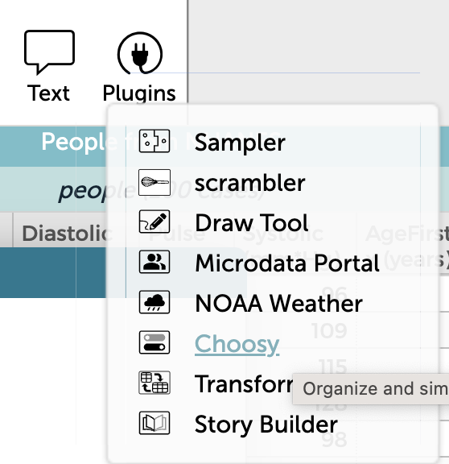

Learning choosy
Choosy is a multi-purpose tool for coping with various problems.
To get choosy, pick it from the Plugins menu in CODAP. The choosy window will appear.

Choosy about to be chosen.The main thing people use choosy for is hiding and showing attributes. If your table has too many columns and you’d like to get some of them out of the way, choosy is for you.
If that’s your problem, click Hide and show attributes on the left. That will teach you what you need to know.
Still here? Choosy has other powers.
Tagging cases
Hiding and showing attributes is about the columns of the table. Choosy can help you organize rows as well by tagging them.
A “tag” is basically a new attribute that you make with choosy. One common use goes like this: You’re looking at a graph and you see a cluster of points that you think is interesting. You select them. Now you want a way to find them again even after the selection has gone away.
You can tell choosy to “tag” them. Choosy makes a new column called Tag (but you can change that) and in that column, every selected case is marked interesting (and you can change that too).
There are other uses to this feature; click on Tagging at the left to learn more.
Batches
Sometimes, you have a lot of attributes, and it would be helpful to organize them into groups. Choosy calls them “batches.”
For example, if you have a bunch of health data, you might have a batch for demographics, which would include age and sex; and another for measurements, which might have height and weight and forearm length; and another for bloodwork, with cholesterols and blood type and such.
With attributes in batches, you can hide and show them as group instead of one at a time.
If that’s what you want, see the heading for Making batches on the left.